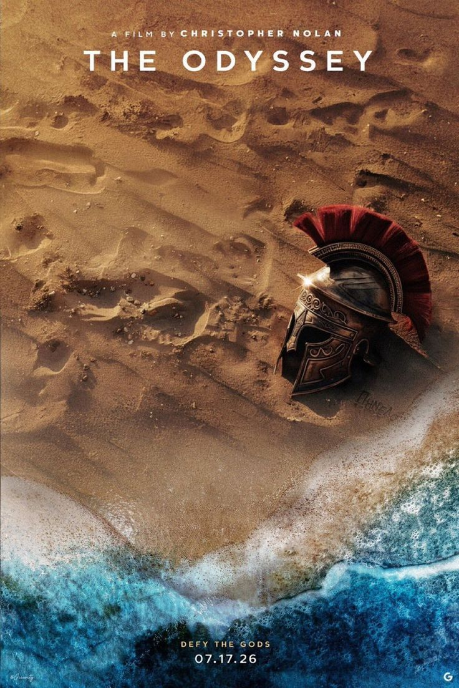

RELIC 01 // ARES

SPEC: CORINTHIAN // ATROPOS
The Spartan Helm
Washed upon the desolate sands of Troy. The crest represents not mere protection, but the armor of identity worn against the erosion of time.